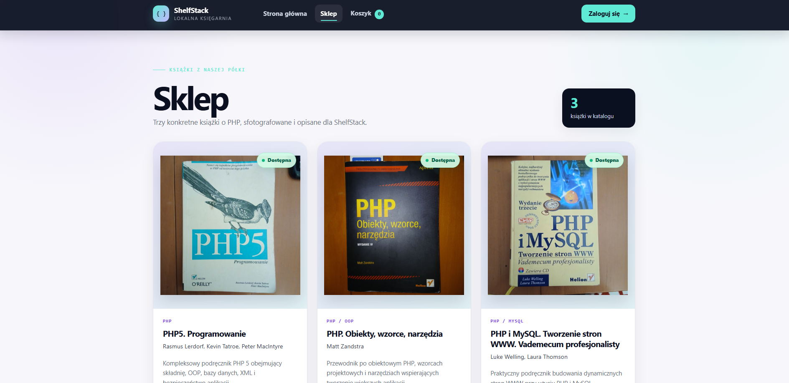
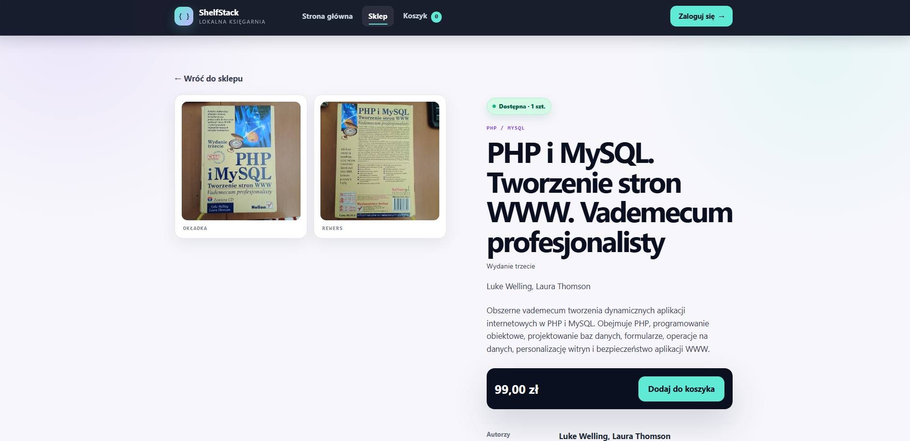
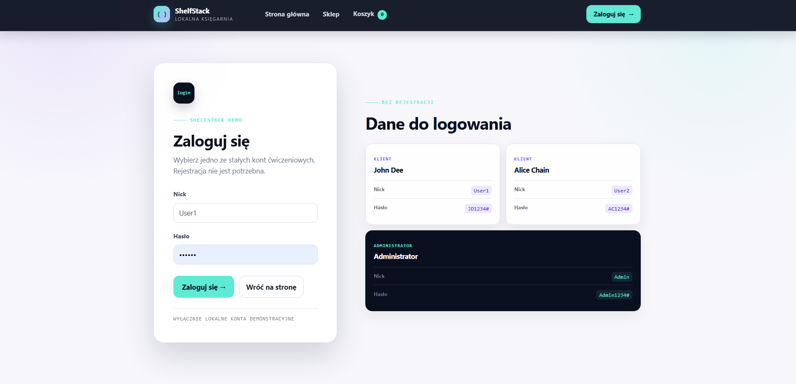

O projekcie
ShelfStack to demonstracyjna aplikacja księgarni rozwijana na bazie edukacyjnego projektu PHP_Bookstore. Obejmuje katalog produktów, sesyjny koszyk, zamówienia zapisywane w MariaDB, konta demonstracyjne oraz panel administratora. Projekt pokazuje praktyczne zastosowanie PHP, relacyjnej bazy danych i obsługi ról użytkowników.
Zobacz kod na GitHub


Zakres demonstratora
Aplikacja łączy część przeznaczoną dla klienta z panelem administratora. Użytkownik może przeglądać katalog książek, dodawać wybrane pozycje do sesyjnego koszyka i przejść przez demonstracyjny proces składania zamówienia.
Dane zamówień są zapisywane w relacyjnej bazie MariaDB. Konta demonstracyjne pozwalają sprawdzić rozdzielenie zwykłego użytkownika i administratora oraz dostęp do funkcji zależnych od roli.
ShelfStack działa lokalnie w środowisku XAMPP. Projekt pozostaje aplikacją edukacyjną i demonstracyjną, dlatego strona Portfolio prowadzi do kodu źródłowego, a nie do publicznego sklepu.